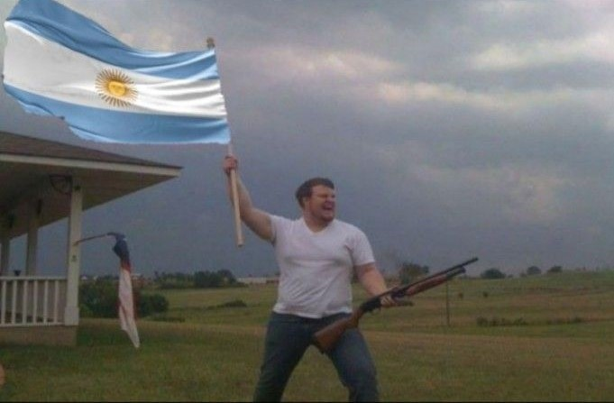
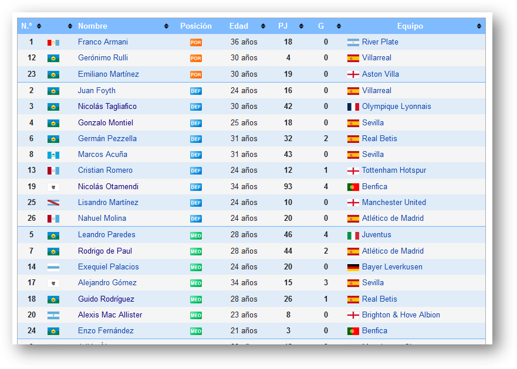
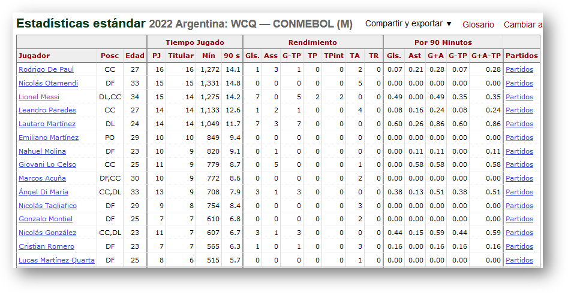
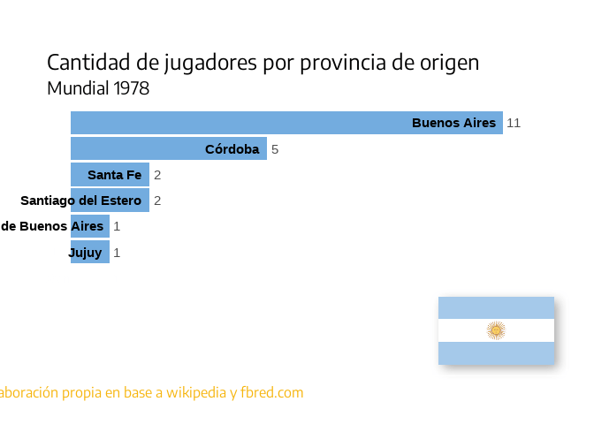

3 minutes
Seleccion Argentina 2022
Mundial 2022
El mundial ya arrancó y la ansiedad (¿de la buena?) copó al mundo. Y a mí también. Pero este es un mundial particular. Para esta competencia abundan los datos y las fuentes de donde obtenerlos. Es por esto que decidí reflotar un ejercicio que había armado allá por el Mundial anterior (2018), en donde mostraba información sobre la Selección Argentina. En aquel momento junté la data de forma manual, a través de publicaciones en Wikipedia. Así llegué a un laborioso excel y armé las visualizaciones con flourish, una plataforma que permite de forma gratuita e intuitiva contar historias sin necesidad de saber programar ni mucho menos.
Con esta gran excusa para volver a poner las manos en la data me propuse automatizar aquello que había hecho a mano y, además, poner a disposición la información que encuentre. Encaré así un pequeño proyecto de dos etapas:
-
Armar un dataset de la selección por cada mundial a través de dos fuentes: Wikipedia y un muy buen paquete de R llamado worldfootballR, desde donde se puede acceder a diferentes páginas de internet con información estadística de jugadores, clubes y hasta ligas del mundo entero.
-
Analizar brevemente la información encontrada, como excusa para volver a jugar con R y las visualizaciones

Los datos
La pregunta que motivó este proyecto allá por el Mundial 2018 rondó por el lugar de orígen de los convocados a la selección Argentina. Para ello necesitaba una fuente con dicha información y encontré como mejor candidata a Wikipedia. En aquel momento entre página por página que refería a la lista final de convocados a la Selección y armé una base de datos sencilla, a mano. DOLIÓ.
Para este mundial se me ocurri√≥ reproducir el ejercicio pero de forma un poco m√°s autom√°tica. La estrategia consisti√≥ en dos instancias. La primera fue obtener el listado definitivo de seleccionados para cada mundial. Para ello fui a escrapear (“raspar” y extraer los datos de una p√°gina de forma program√°tica) wikipedia y armar as√≠ una primera base llamada lista_convocados_wikipedia.rds. El script que arm√© se puede ver ac√°.
Un segundo ejercicio consisti√≥ en “pegarle” a cada listado de jugadores la url que contiene el acceso al perfil y las estad√≠sticas de los jugadores, de donde podr√≠a, por ejemplo, tambi√©n extraer la localidad de nacimiento de cad auno.
El resultado de ambos procesos fue un repositorio abierto que contiene tanto el ejercicio como el conjunto de datasets armados.

El siguiente paso fue combinar la información de wikipedia con aquella que podía extraer a través del paquete worldfootbalR, específicamente de una de las páginas con las que se conecta: fbref. De allí podía extraer la ciudad de la que es oriundo cada jugador y dejar también las bases para seguir indagando por más información.

Presentando los datos
Una vez obtenida la información, sistematizada y almacenada en bases de datos, decidí jugar con un par de gráficos, apenas para explorar los resultados1. Van tres simples visualizaciones a modo de ejemplo de lo que se puede hacer con las bases:


Cantidad de jugadores convocados por la Selección Argentina según la provincia de orígen.

¿Cómo seguir?
En las bases disponibles está el link que permite extraer la información de cada jugador volcada en fbref. Con ello vas a poder no sólo caracterizar el lugar de orígen sino introducirte en las estadísticas de cada jugador y compararlas a lo largo de los mundiales (de 1978 en adelante).
Queda también limpiar la georreferenciación de las localidades de nacimiento de los jugadores, no en todos está dicha información y podrían hacerse lindas cosas con ello.
¡Buen provecho!
-
Dejo ac√° el c√≥digo para reproducir, adaptar y seguir jugando! ↩︎